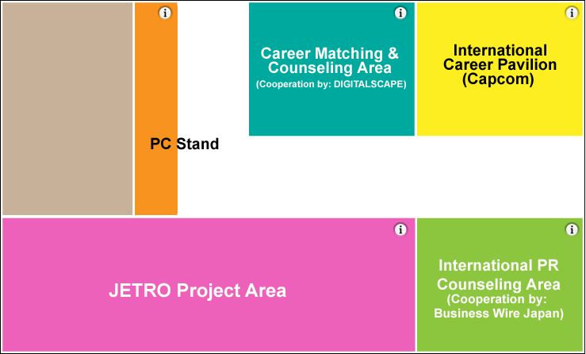

Area for businesses expanding overseas and for domestic and international business persons who want to expand their endeavors in the Japanese market
The International Business Consultation Area / International Career Pavilion (open all 4 days) is a meeting area for people from Japanese companies extending their operations into overseas markets and for domestic and international business persons who want to expand their endeavors in the Japanese market. Capcom is the exhibitor at the International Career Pavilion, the aim of which is to promote international recruitment.
In cooperation with DIGITALSCAPE, counseling services regarding careers in the Japanese game market are provided at the Career Counseling Area.
In cooperation with Business Wire Japan, counseling services regarding advice on disseminating information internationally are provided at the International PR Counseling Area.
The JETRO Project Area will be used as a platform for international business talks, and it will be attended by firms that exhibited at the JETRO booth at Game Connection.
Venue map

Description of each area
Career Matching & Counseling Area
| Target | Persons concerned with development or personnel at firms/individuals involved in the computer entertainment business, particularly in the game industry, and persons seeking employment or a change of jobs |
|---|---|
| Description | ・Matching and counseling service for persons considering development partnerships or corporate alliances ・Matching and counseling service for persons considering business development while retaining some plan, technology, service, etc. ・Career consulting for persons seeking employment or a change of jobs, and advice on corporate strategies for securing personnel |
| Fee |
No charge Appointments being accepted now through the TGS 2010 Business Matching System |
Cooperation by: DIGITALSCAPE Co., Ltd. （http://www.dsp.co.jp/）
International PR Counseling Area
| Target | Persons from firms/organizations involved in the computer entertainment business, particularly in the game industry ・Companies that want to expand their own brand, information or products throughout Japan and overseas ・Companies that want to make information about themselves known to foreign investors |
|---|---|
| Description | ・Matching and counseling service for persons considering public relations or investor relations activities ・Advice on public relations or investor relations activities for the domestic market ・Advice on public relations or investor relations activities for overseas markets ・Advice on how to write and distribute press releases |
| Fee | No charge |
Cooperation by: Business Wire Japan, Co., Ltd. （ http://www.businesswire.jp/）
JETRO Project Area
| Target | Persons from game-related companies in Japan or overseas who want to meet with the Japanese firms that participated in the “Game Connection” project run by JETRO. |
|---|---|
| Description | Game Connection was held in March 2010. Six months later, at TGS, for the purpose of promoting each firm’s project, interested persons can have in-depth business talks either in this booth or at the Business Meeting Area (Hall 2). There will also be information on JETRO projects for 2011 and beyond. |
| Participating companies | Participating companies Vanguard Co., Ltd. (http://www.vgd.co.jp/) RIZ Inc. (http://www.riz.co.jp/) plus other firms |
International Career Pavilion
| Exhibitor | Capcom Co., Ltd. |
|---|---|
| Description | Capcom’s core business is the development and sale of home video game software, and so far, it has globally launched a large amount of original content. In order to further strengthen its brand power, Capcom actively provides its employees with opportunities to engage in activities overseas. Japanese and foreign creators alike, who have an interest in Capcom, are welcome to consult with us at our booth about their careers. We hope you’ll drop by. For those traveling from abroad: Japanese language ability is a prerequisite at Capcom.Parties interested in meeting with recruiters are required to speak at least a daily conversation level of Japanese. |
PC Stand for the TGS Business Matching System
This PC Stand allows users to conveniently access the TGS Business Matching System.
Users can check appointments, emails and other information. The PCs are free to use, so please help yourself.
(Cooperation by: Acer Inc., Official PC Sponsor)